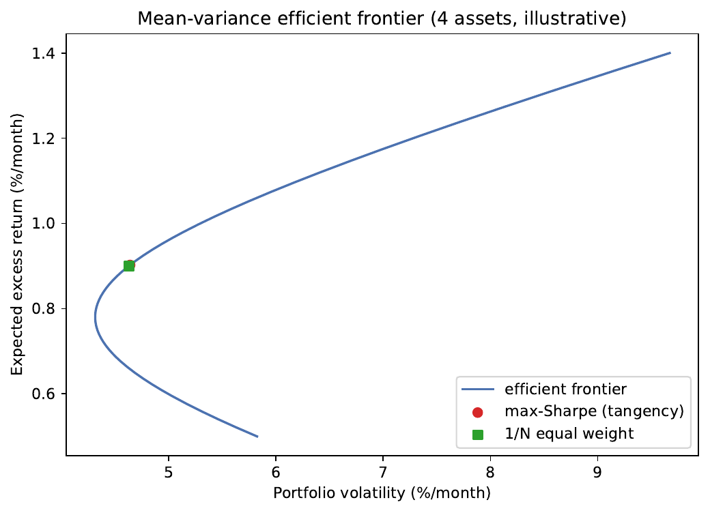

Portfolio Optimization & Quantitative Trading with LLMs
Signals, backtests, and risk — where reading text at scale earns its keep, and where it doesn't.
Juan F. Imbet · Paris Dauphine – PSL University
Summer school · math one click away — press m or click ⚙ "Under the hood"
Roadmap
Where this lecture is going
Classical theory & its limits — why "optimal" portfolios lose to naive ones.
LLMs as data processors — turning prose into views and factors.
LLM-guided trading — where in the stack a slow signal belongs.
Backtesting honestly — the discipline that separates research from real money.
Risk management — reading danger in text before it hits prices.
the bigger picture
One thesis runs through the whole lecture: LLMs are information-extraction engines,
not optimizers. They sharpen the inputs; classical finance still
decides how those inputs become positions.
01
Classical portfolio theory and its limits
The math is right; the inputs are noisy — and that gap is exactly the opening for text.
The central question
Why does more sophistication lose to a naive 1/N split?
Given many risky assets, how should you split your money? Markowitz (1952) turned this
into one elegant optimization. Yet decades later, just putting an equal slice in everything
routinely beats the "optimal" answer.
The puzzle
Sophisticated optimizers chase the efficient frontier
Naive 1/N equal-weight has no model at all
1/N still wins out-of-sample (DeMiguel et al., 2009)
Why?
The theory is right; the inputs are noisy
Estimating expected returns and covariances dominates the gains
This is where LLMs enter — sharper inputs from text
thesis of the lecture
LLMs are information-extraction engines, not optimizers. They produce signals;
classical theory dictates how those signals become portfolio weights.
The classic recipe
Markowitz: trade expected return against risk
Mean-variance optimization picks weights that get the most expected return for a given
level of wobble. The famous result: you tilt toward assets with strong return signals and away
from risky ones.
the move that follows
The weights are driven by \(\boldsymbol{\mu}\), the expected-return signal — so improving that
signal is where the whole payoff lives.
Why the optimizer disappoints
Estimation error wins: the inputs are the problem
Plug noisy historical estimates into the optimizer and it confidently makes huge bets on
whatever happened to do well lately — then falls apart out of sample.
Where the noise comes from
Average returns are estimated imprecisely — the noise rivals the signal
The covariance matrix goes near-singular when assets outnumber history
Inverting it amplifies those errors into wild weights
Standard remedies
Shrinkage — pull the covariance toward a structured target
Robust optimization — swap point estimates for uncertainty sets
Factor models — compress to a few factors (Fama–French 3/5)
DeMiguel et al. (2009)
Across 14 datasets, 1/N beats sophisticated optimizers on out-of-sample Sharpe.
A precise expected-return signal is the missing ingredient — enter LLMs.
A Bayesian fix
Black–Litterman: start from the market, then add your view
Instead of trusting raw historical averages, begin with what the market already implies,
then nudge it with specific opinions. This separates where you have a view from
what the view is — exactly the shape an LLM signal takes.
sanity check
With no views, the posterior collapses back to the equilibrium prior and the optimum is just the
market portfolio — the method can only move you for a reason.
Plugging in a machine's opinion
One LLM view, handled with the right humility
An LLM reads Apple's earnings call and says there's a 72% chance of an EPS beat. Black–Litterman
turns that into a view — and, crucially, controls how much it's allowed to move the portfolio based
on how confident it is.
High confidence (small \(\Omega_{11}\)) ⇒ posterior moves close to the 1% view
Low confidence ⇒ posterior barely leaves the prior
BL prevents any single noisy signal from dominating the portfolio
Empirical validation: Mantshimuli & Mwamba (2025) aggregate multi-LLM
sentiment views via an LSTM into BL — improving Sharpe and annualised return over single-LLM and
market-cap benchmarks. Yuksel (2025) treats the LLM as an evolutionary portfolio selector.
Drawing the boundary
Where LLMs can — and cannot — add value
Be honest about the edge. LLMs shine at turning messy text into structured signals; they are
not magic return predictors or covariance estimators.
Clear value
Structuring alternative data (calls, filings) into factors/views at scale
Risk monitoring — flagging emerging risks before the statements show them
Analyst-view aggregation with calibrated uncertainty
no clear value
Return prediction beyond a few days (factor risk dominates)
Replacing factor models (not built to estimate covariances)
Timing in isolation (no order-flow / microstructure access)
two hypotheses underpin the caseInformation: text holds un-impounded return information (Grossman–Stiglitz — efficiency
can't be perfect); evidence is mixed — Lopez-Lira & Tang (2023) find a significant
but small, costly-to-harvest signal. Extraction: LLMs read negation, hedging, and sarcasm
better than bag-of-words — this part is largely unambiguous (FinBERT, Araci 2019).
02
LLMs as alternative-data processors
Turning the least-mined data source — language — into views and factors.
The raw material
Text is the least-saturated alternative data
Satellite imagery and credit-card flows lose their edge fast once everyone buys them. Text —
earnings calls, reports, filings, news, central-bank speak — pours out terabytes a year and stays
comparatively un-mined.
the bigger picture
LLMs convert this prose into numerical signals at scale, where older data sources have already
been arbitraged away.
Two construction pathways in this section
Views for Black–Litterman — a per-firm view with calibrated uncertainty.
Factors for Fama–French — a long-short "language factor" tested for alpha.
From document to view
A four-stage pipeline for extracting analyst views
Each document becomes a single number — a view — through a disciplined assembly line that
ends with a sanity-preserving normalization step.
Retrieve & chunk — pull from a feed or SEC EDGAR, split semantically
Score — an LLM (or FinBERT) assigns sentiment per chunk
Aggregate — position-weighted into a document signal in \([-1,1]\)
Normalize — within industry and period to remove sector trends
Analyst-report tone carries incremental return information (Lehavy, Li & Merkley, 2011); this pipeline operationalises that insight at scale with an LLM.
beware staleness / look-ahead
Use only text available before the rebalance close. After-hours summaries leaking into
next-day trades is look-ahead bias.
Worked example
Earnings-call views across 100 S&P 500 names
Give the model an analyst's job description and one rule: read the excerpt, output a single
number from bearish to bullish.
The prompt
"You are a sell-side equity analyst. Given this earnings-call excerpt, assign a
return sentiment score from −1 (bearish) to +1 (bullish) over the next month. Output only the number."
CEO "cautious on macro, right-sizing cost structure" → score ∈ [−0.6, −0.3]
0.08
signal–return correlation (significant)
0.25
implied information ratio
+15%
BL Sharpe vs. 1/N, pre-cost
Calibrated on \(T=800\); BL optimizer with \(\delta=3,\ \tau=0.05\).
Meskovskis & Kenyon (2024): an LLM-generated SWOT view from strategic filings
supports longer horizons where price-based backtesting lacks power.
From view to factor
Building a "language factor" — and asking if it earns alpha
Rank every stock by its text signal, go long the most bullish and short the most bearish, and
you have a tradeable factor. The real test: does it pay beyond the well-known factors?
the honest finding
Earnings-call alpha exists short-run (≤ 5 days), then decays as the rest of the market
reads the same text.
The discovery risk
The factor zoo — and why automated search makes it worse
Test hundreds of candidate factors on one history and some will look profitable by pure luck.
Letting an LLM generate even more candidates multiplies that danger.
multiple-testing inflation · Harvey, Liu & Zhu (2016)
With hundreds of candidate factors on one dataset, a t-statistic above 2 produces many false
discoveries. A factor that survives a Bonferroni or multiple-comparison Sharpe test
is far stronger evidence than a raw \(p<0.05\).
AlphaQuant (Yuksel, 2025): an LLM-evolutionary loop that proposes,
evaluates, and refines alpha features — replacing manual feature engineering.
This amplifies the multiple-testing problem: the backtesting discipline that
follows becomes non-negotiable.
03
LLM-guided algorithmic trading
Slow signals, sized correctly — and why the model is a co-pilot, not the pilot.
Picking the right altitude
Where in the trading stack do LLMs belong?
Trading runs from microsecond high-frequency to multi-week macro. LLMs matter in the
slow regime — where signal quality, not delivery speed, decides
performance. Think latency in hours, not milliseconds.
A signal must become a well-behaved position
A signal \(s_t\) drives a position \(w_t=f(s_t)\) that should:
scale with signal strength,
stay bounded (no runaway concentration),
decay as the signal ages.
Sizing the bet
From a raw sentiment score to a dollar-neutral position
Standardize the model's output against its own recent history, then size positions so the
book is long the bullish names and short the bearish ones in equal measure — insulated from the
overall market.
Kirtac & Germano (2024): GPT-3-class news scores predict next-day returns with
above-chance directional accuracy and a high in-sample post-cost Sharpe — but single-sample Sharpes
rarely replicate out of sample. A magnitude baseline, not a promise.
A narrower, safer role
LLMs as an extra sense for order execution
When you must buy or sell a large block, the question is how fast. Classical theory
balances market impact against the risk of waiting; an LLM adds a warning light, not a new steering wheel.
HARLF (Coriat & Benhamou, 2025): three-tier hierarchical RL injecting LLM sentiment into
the reward — strong risk-adjusted returns on 2018–2024 data.
The reality check
Why LLMs are not stock pickers
A statistically significant signal is not the same as a profitable one. Markets — especially
for big, heavily-watched stocks — are simply too fast and too crowded.
significant ≠ profitable
The market-efficiency literature has drawn this line for decades.
Semi-strong EMH (Fama, 1970): public info is already in prices; large
caps adjust to news in minutes — faster than an LLM API can read it.
Grossman–Stiglitz: some return must accrue to informed trading,
but if everyone subscribes to the same API the signal crowds and alpha compresses.
Calibration problem: a "70% positive" LLM probability is not a claim the
stock rises 70% of the time — it requires out-of-sample calibration to returns.
the right nicheHeterogeneous, low-coverage, novel sources — small-cap filings, emerging-market news,
niche disclosures — where coverage is thin and price discovery is slow. There the Grossman–Stiglitz
return survives.
04
Backtesting with LLM signals
The discipline that turns a research artefact into a deployable strategy.
First principles
A backtest is necessary, never sufficient
A backtest asks: would this have made money historically? A realistic one also
accounts for trading frictions, data limits, and the fact that you tried many strategies. An in-sample
Sharpe is nearly useless — the model has already seen the future.
Validate on the next window — hyperparameters only
Test on the next step; report performance only on
concatenated test windows
The metric that matters
Out-of-sample Sharpe — and the costs that eat it
Judge a strategy on risk-adjusted return earned on data it never saw. Then subtract the bill:
trading frequently can quietly erase the very edge you found.
Rule of thumb: Sharpe > 1.5 over ≥ 3 years OOS before paper trading
Capacity: trade ≤ 5–10% of average daily volume; earnings-call signals
crowd in the first hours
The silent killers
Look-ahead and survivorship: how good backtests go wrong
Two biases quietly inflate nearly every naive backtest — and LLMs introduce subtle new ways
to leak the future into the past.
Look-ahead bias — LLM-specific forms
Embedding leakage — model fine-tuned on transcripts post-dating the trade
Model-selection leakage — best variant chosen by full-period performance
Timestamp errors — calls release after close; day-\(t\) open uses unavailable info
Survivorship bias
Today's S&P 500 list excludes the distressed names that were removed — exactly where a risk
strategy drew down. Use point-in-time constituents.
05
Risk management applications
The highest-value, lowest-competition use: reading danger in text before prices move.
Reading the tail
Textual warnings shift risk before they hit prices
Management caution, litigation, sovereign stress — these qualitative warnings fatten the
bad tail of the return distribution before they show up in the numbers. LLMs read this stream
and feed it into volatility and tail-loss estimates in near real time.
the bigger picture
Where return prediction is a crowded, near-impossible game, risk reading is the durable edge:
the same text that's too slow to trade on is fast enough to protect you.
Acting on the signal
Automatic de-risking when the text turns dark
Wire the risk signal directly into the optimizer: as the language around a sector turns
negative, its modeled risk rises, the risk constraint tightens, and the system trims exposure on its own.
Monitoring pipeline — three layers
Ingestion — poll EDGAR, news APIs, social at a configurable frequency
Action — route critical alerts to a risk officer or a pre-approved auto-response
Calibration: tune to the firm's portfolio; beat alert fatigue (< 20/day for 100
positions); match latency to use (minutes EOD, seconds intraday).
A concrete save
An 8-K alert that cut half the loss
4:17 PM — a held name files an 8-K announcing an SEC investigation into
revenue recognition. Within 30 seconds the LLM classifies it.
{ "risk_level": "critical", "risk_type": "legal",
"affected_positions": ["TICKER_X"],
"summary": "SEC formal order into revenue recognition.
Historical precedent: 20-40% downside risk." }
The action layer cuts the position from 2.1% → 1.0% at the next open.
Next morning the stock opens −28%.
promise and limit
The system acted faster than any human. But it could not foresee the exact magnitude, nor whether the
probe ends in no action or a restatement. It reduces tail exposure — human judgment still sets
the thresholds.
Wrap-up
Lecture 10 — five takeaways
Optimizers, not replaced. Markowitz and Black–Litterman remain the right
machinery; LLMs sharpen the expected-return signal from text. Extractors, not optimizers.
Factor construction is the most defensible channel. Test LLM-derived
long-short alpha against Fama–French; correct for multiple comparisons.
Efficiency limits but doesn't eliminate alpha. Grossman–Stiglitz ⇒ value
lives in low-coverage markets; large caps are the hardest target.
Backtesting discipline is non-negotiable. Walk-forward, real costs,
point-in-time data, overfitting correction — research artefact vs. deployable strategy.
Real-time risk monitoring is high-value, low-competition: structured risk
signals + GARCH augmentation + continuous surveillance, with auditable value.
Next — Practical 10
Build the efficient frontier, map an LLM score to a Black–Litterman view, and run a cost-aware
walk-forward backtest in Python.
A
Appendix — extended derivations, benchmarks & further reading
Frontier geometry, a literature map, the EMH evidence, and calibration detail.
Appendix · geometry
The Sharpe-ratio geometry of the frontier
The tangency portfolio is the single point that maximizes return per unit of risk — and a
deterministic plot shows it sitting almost on top of the naive 1/N portfolio.

Figure. Mean-variance efficient frontier for a fixed four-asset example (Definition: mean-variance efficient portfolio), with the maximum-Sharpe (tangency) portfolio and the 1/N equal-weight portfolio marked. The two sit almost on top of one another — a concrete illustration of the DeMiguel et al. (2009) finding that, once expected returns and the covariance matrix must be estimated, the naive 1/N rule is hard to beat.
Source: generated deterministically by gen_efficient_frontier.py (no data or network dependence).
Adding the non-negativity constraint removes the closed form; the mean-variance program must then be
solved numerically as a quadratic program.
Appendix · literature
A map of recent LLM-portfolio research
Work
Mechanism
Result
Mantshimuli & Mwamba (2025)
Multi-LLM → LSTM → BL views
Sharpe / return ↑ vs. single-LLM
Yuksel (2025), alpha
LLM evolutionary tournament
Portfolio selection, large universes
Yuksel (2025), AlphaQuant
LLM-evolutionary factor search
Automated alpha-feature discovery
Coriat & Benhamou (2025)
HARLF: 3-tier hierarchical RL
Strong risk-adj. returns 2018–2024
Meskovskis & Kenyon (2024)
SWOT views from strategic filings
Long-horizon view generation
Saha, Lyu et al. (2025)
Survey of agentic PM systems
Taxonomy + open benchmarks
Practitioner survey: Mann (2024) — durable value sits in the information-extraction
layer, not the decision layer.
Appendix · the evidence
News, volatility, and what the EMH literature shows
Tetlock (2007): dictionary sentiment from a newspaper column predicted
excess returns over a decade ago — so the incremental value of LLMs over dictionaries is the
relevant comparison; broad-coverage signals have decayed.
NVIX (Manela & Moreira, 2017): a text-based disaster-risk measure from
newspaper archives predicted market variance and crash risk. LLMs push this to firm-level, real-time.
Regulatory context: Fed SR 11-7 requires model outputs be explainable,
validated, and auditable — directly binding on LLM risk signals (see the RegTech chapter).
Appendix · calibration
Why view uncertainty shrinks as the signal grows
The rule that ties confidence to signal strength is what keeps a loud-but-weak model from
hijacking the portfolio — and it must be calibrated only on past data.
pitfall
Calibrating \(\alpha\) on the test window is model-selection leakage — it must use only data predating
the evaluation window.